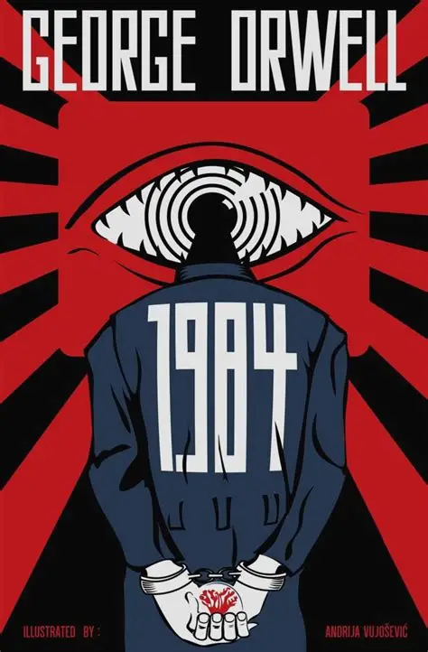
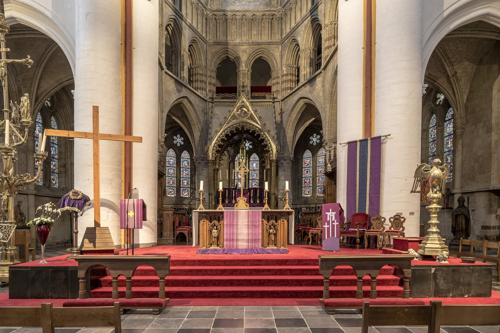

3. Wat inspireert mij?



.jpeg)
.jpeg)
Een website gemaakt voor Godsdienst 2025-2026
Naam: Sabato La Manna
Leeftijd: 18
Woonplaats: Wilderen, België
Beschrijving:
Over mij valt er denk ik niet veel te vertellen. Ik ben opgegroeid in een familie waar religie vroeger belangrijk was, maar nu niet meer.
Ik heb een passie voor alles dat met computers en wetenschap te maken heeft, het is iets dat mij gelukkig maakt, samen met de mensen om mij heen.
Geloof:
Ik ben opgegroeid in een katholiek gezin, en blijf ook dit geloof de dag van vandaag uitoefenen. Het biedt mij houvast en een gevoel van gemeenschap.
God, is niet het enige waar ik in geloof, ik geloof ook in de kracht van mensen om samen iets moois te creëren, en in de schoonheid van de wereld om ons heen.
De mens is iets fascinerend, en ik wil met volle overtuiging geloven in de goedheid van de mensen.
Mijn waarden:
Waarden die voor mij belangrijk zijn zijn respect, eerlijkheid, compassie, humor en integriteit.
“Freedom is the freedom to say that two plus two make four. If that is granted, all else follows.”
“Don’t worry about a thing / ‘Cause every little thing gonna be alright.”
Ik word elke dag geinspireerd door alle mensen overal, het feit dat iedereen zijn eigen verhaal heeft en vecht voor zijn dromen vind ik inspirerend. Het herinnert me eraan dat we allemaal onze eigen strijd voeren en dat we elkaar moeten steunen.
.jpeg)